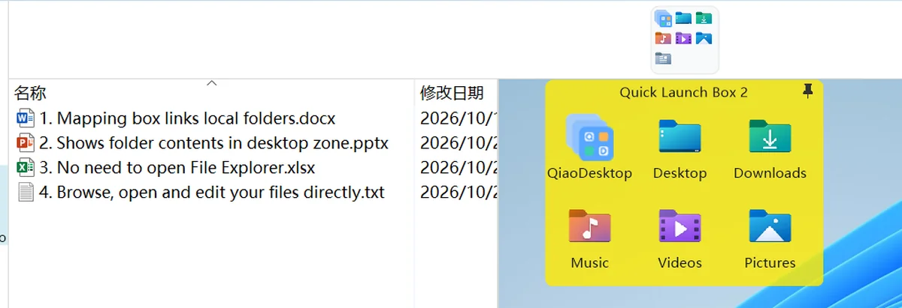
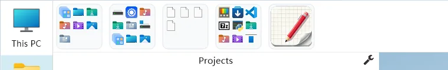

收纳栏：收起来的是盒子，不是文件
它收的不是文件，是你摆出来的盒子本身。收进去之后桌面只剩壁纸，用的时候鼠标一碰就展开。
它和映射栏不是一回事
映射栏放的是目录，指向硬盘上的文件夹；收纳栏放的是盒子本身——你在桌面上建出来的那一块块。把盒子收进去，桌面上就看不到它了，但它没有被删除。

照着做
把盒子收进去
在收纳栏上右键 → 「收纳盒子」→ 从列表里选要收的盒子。可收的是快捷启动盒、文件夹映射盒、便签盒三类；映射栏、收纳栏、文件面板盒本身不可收。
盒子第一次入坞会自动锁定，避免展开时误拖动。不能把盒子拖进栏里，只能走这个右键菜单。
用的时候展开
鼠标悬停在卡片上，盒子会在卡片附近展开；鼠标移开，它自己收回栏里。可以在卡片右键里设「不自动隐藏」，让它一直摊着。
单击卡片不是展开，而是运行这个盒子里的第一个程序。
排顺序、留空位
在收纳栏内拖动卡片到目标格子。它用的是绝对槽位：目标格已有卡片就两者交换，拖到越界格会自动补出空槽，所以中间留白是可以的。
换位置和厚薄
右键收纳栏 → 「停靠位置和大小」→ 选「停靠在屏幕顶端」或「停靠在屏幕右边」，再选「宽条收纳栏」或「极窄收纳栏」。默认是顶端 + 宽条。
这一项也不在设置中心，只在收纳栏右键菜单。
把盒子取回来
在卡片上右键 → 「移出」。盒子会自动解锁、回到桌面。把卡片拖到别的窗口是无效的，右键移出是唯一入口。


再清一次桌面
收完盒子，如果桌面上还有 Windows 自带的图标，用系统自带设置：右键桌面 → 查看 → 取消勾选「显示桌面图标」。这一步是 Windows 的设置，巧桌面不会替你改。
| 想改什么 | 入口 |
|---|---|
| 收纳 / 取出盒子 | 收纳栏右键「收纳盒子」/ 卡片右键「移出」 |
| 停靠位置与厚薄 | 收纳栏右键「停靠位置和大小」 |
| 卡片顺序 / 留空 | 在栏内拖动卡片到目标格 |
| 某个盒子展开后不自动收回 | 卡片右键「不自动隐藏」 |
| 清空 Windows 桌面图标 | Windows 右键桌面 → 查看 → 显示桌面图标 |
常见误区
系统项也能收进收纳栏
「此电脑」「回收站」「控制面板」这些系统项属于映射栏；收纳栏只收盒子。
点一下卡片就展开盒子
单击是运行盒里的第一个程序；展开靠鼠标悬停。
展开时盒子还在原来的位置
不是。盒子会重新定位到卡片附近（默认在下方出现），不是保持桌面上的原坐标。
收进去的盒子被删掉了
没有。卡片右键「移出」就回到桌面，盒内内容原样保留。
三样东西配合起来是这样的：映射栏在左，管「我要去哪」；收纳栏在上，管「这些先别看」；中间留下一整片干净的桌面。